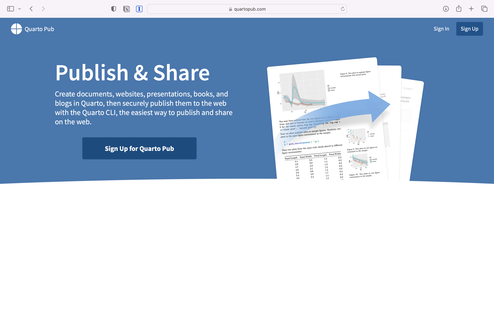
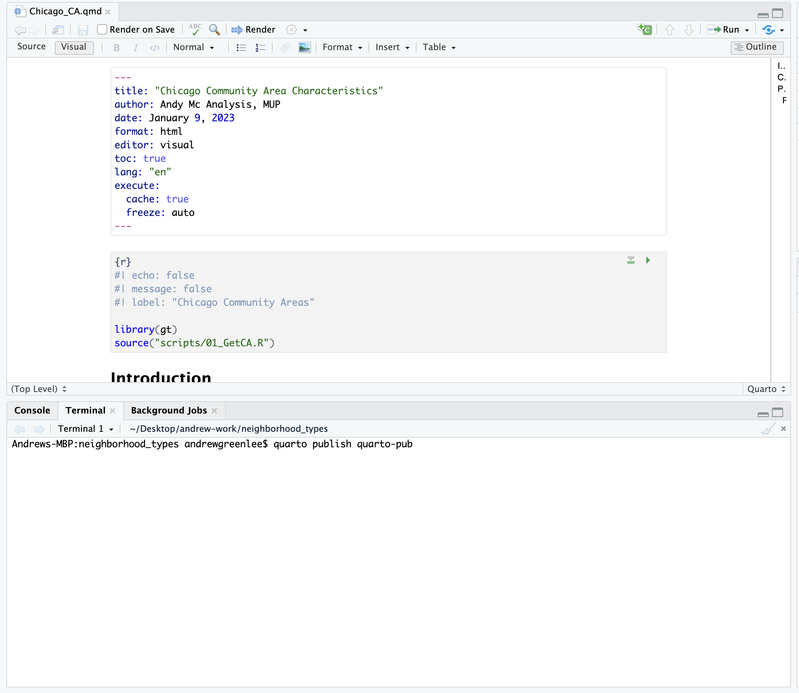
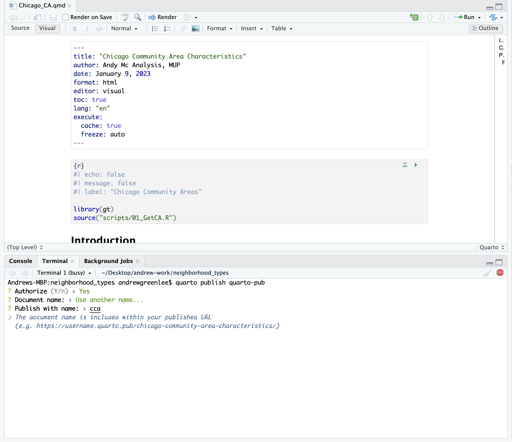

Sharing Your Work
Introduction
This lab focuses on getting your computer set up to communicate with Github and to introduce several workflows for publicly sharing your work. We will use these workflows throughout the course to share work and record feedback. Github represents a standard industry tool for code version control, collaborative development, debugging, and documentation.
While code version control isn’t directly a focal point within practices of neighborhood analysis, we leverage it as a strategy to achieve one of our course goals. As we have discussed in our introductory framing to the course, transparency is an important principle of accountability within data analysis. Version control systems allow us to track changes in our code over time. These systems can help to facilitate accountability by making code accessible and easy to share. Version control systems also opens up the opportunities for collaboration, especially around the debugging of code.

For those people who have not used these systems before, there’s some core concepts to master. Once you do, integrating these systems into your workflow will become much easier. By the end of the class, you will have a lot of experience leveraging these tools as part of your workflows.
Version control systems like Github are also well integrated with several other tools that make it really easy to quickly and effectively share analysis via the internet. Again, this form of sharing is not integral to neighborhood analysis, but it does help us achieve a course goal focused on accessibility of analysis. While print and paper documents still rightfully have their place in our workflows, increasingly, our work is shared and consumed digitally. Being able to produce documents that are publicly accessible via the internet, therefore, becomes an important workflow for us to master.
Please read this lab background in its entirety before you proceed to engage the lab prompts.
Goals
- Set up your computer so that RStudio can communicate with Github.
- Learn several workflows for translating Quarto documents into simple websites.
- Submit your previous lab via Github.
Core Concepts
R and Rstudio
- Terminal
Github
- Push
- Pull
- Pull request
- Repository
Let’s get going…
Github Lab Repository
Link to the Github lab repository. Please accept the Github Classroom assignment repository link for Lab 2: Sharing your Work.
Configure Your Computer to Talk to Github
Our first task is to configure your computer to talk to Github. This assumes that you already have a Github account set up, but that you have not linked this account to your local computer. A great resource that takes you step by step through Github workflows is Jenny Bryan’s Happy Git and GitHub for the useR. The recommended configuration below paraphrases the options found on that site.
Let’s get started!
Register a Github Account
Github is an implementation of Git, which is a version control system designed to help you keep track of files (especially code) which are likely to be updated often. GitHub has some features similar to Dropbox or Box, but with far more emphasis on versioning your work and tracking changes. Within our class, we’ll use GitHub as a location where you’ll store work outputs which you will receive feedback.
Let’s get this set up:
If you do not already have a GitHub account, go to GitHub.com and then click on Sign Up to create a new account. You will make a username (see some sage username advice here), enter your email address, and password, and then hit create account. I recommend using your UIUC email address for this step if you’re creating a new account (for my rationale, see the next step).
GitHub offers some services for free which you can access with your basic account, however, as a student at an educational institution, you can register with GitHub for Education to receive enhanced benefits and services. You will be asked to verify your association with an academic institution, which you can do by entering your [netid](illinois.edu?) email address and taking a picture of your I-Card.

Configure Your Local Machine to Talk to GitHub
You can upload files directly to a GitHub repository in the GitHub web interface, but as you create more complex files and file structures, that’s not going to be a feasible way to manage your work. That strategy also overlooks most of the features of what GitHub is at its core - a version control system.

We might want to version our work for several reasons:
- To keep track of changes we’ve made, so that we can track when code works and when we’ve broken it
- To be able to share code with collaborators and work on the same files at the same time and then reconcile and combine work all together
- To be able to share code and data publicly with others
All three of these rationales are important motivations within the context of our class. There are two strategies which you may want to try to integrate GitHub into your R workflow.
RStudio has GitHub functionality built right in, which is very handy for integrating version control into your R workflow. Assuming you’ve already got R and RStudio installed on your system and have already set up a GitHub account, start here:
- Check to see if Git is installed on your computer, and if it isnt, Install Git.
- Associate git on your computer with your GitHub account.
- Install a Git client like GitHub Desktop.
- Connect to GitHub
- Connect RStudio to GitHub
- Get Started using GitHub integrated with R. This video shows you how to communicate with your Github repository using RStudio:
We will ease our way into using Github, and will also devote some time to troubleshooting in class. I promise, it’s going to make sense soon!

Communicating with GitHub from Rstudio.
Although this lab is formally introducing GitHub’s functionality as part of our class, you have already gotten some experience interacting manually with GitHub as you needed to download a repository in order to complete your first lab. From here on out, you can use RStudio to communicate directly with GitHub so that pushing and pulling repositories can all happen within your RStudio session. By the end of this lab, you will have gained some experience pushing and pulling files (specifically your lab files). From here on out in class, we will assume that you will use GitHub to submit your code for review. Instructions will be clearly posted with both lab and homework assignments.
With those things in mind, let’s think about how we communicate with Github from RStudio.
Basic Workflows
As you have read on the Happy with GitR site, GitHub’s utility comes from allowing us to store remote versions of our code which others can then access, comment on, and modify. GitHub allows us to track versions of our code, and if we need to, we can revert to earlier versions, or fork branches - make special versions of our code which we may want to experiment with or modify. We can also reconcile multiple versions of code back into a single main version, which is particularly useful when we are collaboratively writing or editing code.
For the most part, our course focuses on building a workflow involving a single code author, and not on building collaborative workflows, although you should try collaborating with each other on modifying code. Our end goal in this class is to develop workflows for transparency, accountability, and accessibility.
Reviewing Common Operations

Local vs. Remote
Local vs Remote: Let’s start with the basic distinction between local and remote versions of our work. Local versions are contained on the hard drive of the computer we are working on. Remote versions are in the cloud, in this case, on GitHub’s servers. We will typically work on editing data locally, and will then push our modifications to be integrated into the remote version.
Push vs. Pull
Push vs Pull: To understand this, it’s useful to think about what’s happening from the perspective of your local computer. We pull a version of the repository from the remote repository to our local computer. We push a version of the repository from our local computer to the remote repository.
Commit
Commit: As we make changes to our local repository, GitHub is comparing these changes to the prior version of our repository. When we commit changes, we are essentially asking GitHub to create a markerpost that we could return to in the future. We even label our commits with a brief descriptive note so we can remember what that marker represents. Note that when you commit changes locally, they are not automatically pushed to your remote repository - you have to do that as an extra step. You can, for instance, make multiple local commits to a local repository and then push them to your remote repository.
Commits help to keep us organized. While your commits do not have to be linear or follow any particular order within your data and analysis workflow, they can help you track contributions to what has been done.

Commits serve as failsafe points - we can always revert or rewind our code to where we made commits if we need to debug or if something goes wrong. 
Common Operations
So how do we put these pieces together?
If we already have a remote repository with code or a file structure in it, we create a connection to that remote repository and create a local repository by pulling it from GitHub.
We then make changes to the repository - this might be in RStudio, or we might add, move, or delete things manually.
When we get to a point where we want to create a failsafe point in our code, we commit the changes we made (and add a plain text description of what our commit contains).
We push our commit to our remote version where it will become to version of record (GitHub is tracking the changes we made, so if we need to revert to our previous commit, we could).
Just to be safe, after we push our commits, we may want to pull from the remote server again just to confirm that the version on our local machine is up to date.
From there, we can continue making changes until we are ready to make another commit.

Workflow - Setting up a Local Repository from an Existing GitHub Repository
For interaction with our labs (which are already generated repositories on GitHub), you’ll want to follow the instructions for “Existing Project, GitHub First” on the Happy with Git and GitHub for the useR site. The site presents multiple ways to do this. I suggest starting with 16.2.2 where the instructions walk through using the RStudioIDE to connect to an existing remote GitHub repository.
For all UP 570 labs and assignments, existing repositories are provided for you (when you click the lab URL to accept the repository, a user-specific version is created for you from a master copy stored on GitHub). You can then connect to this repository in RStudio, create a local copy on your computer, modify that local repository by making changes, adding data and writing, as well as proejct documentation. You can then stage the changes you’ve made, commit your changes locally, and push your changes to the remote repository on GitHub.
Publish using Quarto Pub
Quarto Pub is a free service that allows you to quickly publish Quarto documents. Quarto Pub represents one of the easiest ways to publish documents.
In order to use Quarto Pub, you’ll need to create an account. Visit https://quartopub.com and create an account. I chose to use my GitHub username, but you can create an account with any name you wish (please keep in mind that the account name will become part of the URL which others will see).

It’s a good idea to preview your document before publishing it to see how it will look in a web browser. Render your document so that you can see what the final document will look like online.
While we are using Quarto within RStudio, Quarto can also be run at the command line to render a range of document types. We will briefly use the command line in order to publish out document to Quarto Pub.
In your RStudio session, click on the terminal tab and type:
Put in plain language we are asking Quarto quarto to publish our document publish via Quarto Pub quarto-pub.

You may be prompted to log in to your Quarto Pub account on the internet before proceeding. Depeding upon the name of your document, you may also need to provide a shorter name (you will be prompted in the terminal window if that is the case). Quarto will then publish the document and will open a window that takes you to your published document.

You can then examine your published document at the URL that’s generated for you. For example: https://agreen4.quarto.pub/cca/
In the future if you need to update the document, you can run the publish step again.
Publish using GitHub and Netlify
Quarto Pub represents a really fast and easy option for creating and sharing Quarto documents. We’ll also learn another more involved strategy which you may choose to employ. This involves pushing published code and HTML content that represents a publishable document or website to Github and then linking this repository to a web hosting service like Netlify which will then publish the site for you.
This strategy can be useful in that you end up with two deliverables - your code base and associated HTML files on GitHub and a website hosted by Netlify. Our course website - the very website you are reading right now - is published using this pipeline. The webpages are each a Quarto Markdown file. The files are pushed to a Github repository. Netlify links to this repository and when new updates are pushed to Github, Netlify “refreshes” the website, typically within a minute or less of the push being complete.
If you simply want a quick and easy way to share your work, Quarto Pub may be completely sufficient! If you want more advanced web hosting options and configurability (like domain management), Netlify may be a more appropriate solution. We will learn both strategies, and you should take the time to become comfortable using either strategy.
What is Netlify?
Netlify is a web development platform that automates the building a serving of websites. While certain aspects of the Netlify platform are monetized, the types of basic elements which we can use to create and serve a website are available for free.
When we grant Netlify access to a GitHub repository, it looks for files that can be rendered as html and then serves those at a unique URL. When we commit and push updates to that repository, Netlify updates the files that are being served to the internet.
Quarto Markdown can produce outputs in a variety of formats including html. Netlify is built around looking for html files in our GitHub repository. Typically, when we render Quarto Markdown as HTML locally, it will create a _site file in our root folder. That folder has all of the content that we want Netlify to serve on the internet.
With these things in mind, let’s try getting our lab files on Netlify!
Setting Up our Project
We have to make two tweaks to our project in order to get them to work properly with Netlify.
Add a _quarto.yml file
All Quarto websites require a special YAML file to tell them how to render. In a text editor of your choice, create a new file called _quarto.yml and save it in the project root directory.
Inside the _quarto.yml file, include the following:
project:
type: websiteNow when you render your project, it should include a folder called “_site” which contains a self-contained version of the elements of your document. You can explore the many other options to style your site here.
Rename our document index.qmd
Every website needs a homepage. By default, the name of this page is “index.html”. Netlify will always start serving from this page. Rename your Quarto document “index.qmd” and then render this to produce the associated html files.
Push to Github
Push your entire repository including the _site folder to Github.
Open Netlify
Navigate to Netlify’s website. If you haven’t already done so, create a new account (you can log in and link this directly to your existing GitHub account).
Once you have an account, navigate to Sites and click “New Site”.
Netlify will ask you if you want to create a site from an existing GitHub repository, which you do! Navigate to the repository that contains the lab files and _site folder you want to serve and select this repository.
There’s one setting we need to modify in order to get this to work properly! Under Build settings, there’s a blank area called Publish directory. In this box, you need to point Netlify to _site as your specified publish directory - this is where Netlify will look for updated files to publish.
After you do this, click ok. Netlify will build your site (this may take a few minutes) and share a url with you. When you click on it, you should see a live version of your website.
Notes
This approach is a little more complex, but it does offer you a lot of flexibility to create sites for production. You will likely want to start off using Quarto pub, but as you progress in the complexity of your analysis, you may want to spend more time experienting with Netlify as a web deployment platform.
Lab Evaluation
In evaluating your lab submission, we’ll be paying attention to the following:
Successfully create and publish a quarto page via Quarto Pub.
Successfully create a publish a quarto page based upon your first lab assignment via GitHub and Netlify.
As you get into the lab, please feel welcome to ask us questions, and please share where you’re struggling with us and with others in the class.